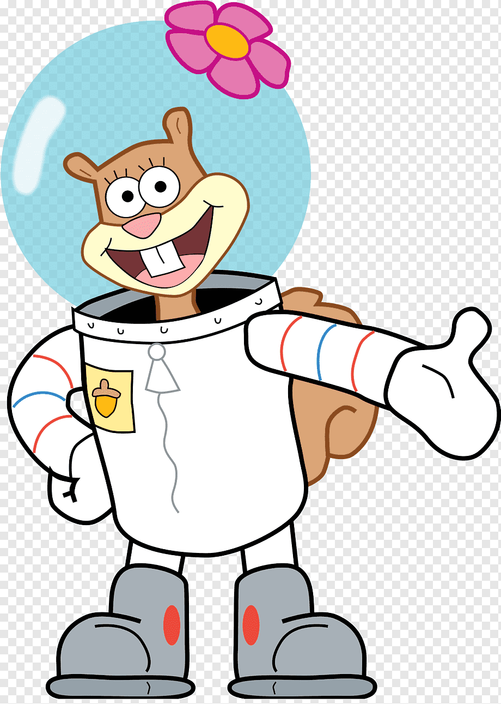

O Colégio Estadual Dr. Claudino dos Santos foi criado em 06 de outubro de 1914. Recebeu este nome em homenagem a Claudino Dagoberto Ferreira dos Santos. Dr. Claudino foi um personagem de destaque em sua época, homem culto e de inteligência privilegiada. Foi bacharel em direito, poeta, escritor e jornalista. Amava apresentações teatrais e literatura. Foi o fundador do Colégio Estadual do Paraná. Apesar de ter nascido no Recife, foi um personage…distribuídos nos turnos da manhã, tarde e noite, Dentre as modalidades de ensino ofertadas à população estão: Ensino Fundamental fase II, Ensino Médio, Ensino profissionalizante e Educação de Jovens e Adultos. EJA, Projetos de contra turno como Programa Mais Aprendizagem, Edutech – Games e Programação e Hora treinamento. SOMOS NA ATUALIDADE UM GRANDE COLÉGIO COM ENORMES DESAFIOS!!!
